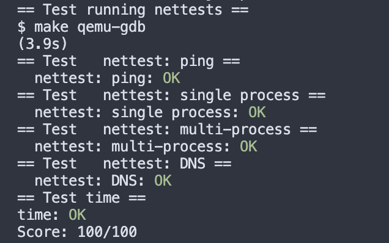

Lab 11 networking 实验记录
lab link: https://pdos.csail.mit.edu/6.828/2020/labs/net.html
11.1 E100
1 要求
补全网卡驱动里的e1000_transmit()和e1000_recv()函数，使之能够接受发送数据packets。
这个task的自由度不高，细节主要跟着prompts和hints就可以实现。需要了解大致步骤&原理可以参考manual里的ch3。
2 实现
首先获取当前的ring index以及对应的desc：
1
2
3
4
5
6
7
8
9
10
11
12
13
|
int
e1000_transmit(struct mbuf *m)
{
//
// Your code here.
uint32 end;
struct tx_desc *desc;
acquire(&e1000_lock);
end = regs[E1000_TDT]; // cur desc id
desc = &tx_ring[end]; // index into ring to get cur desc
// ...
}
|
然后检查desc overflow。如果desc上设置好了E1000_TXD_STAT_DD，说明上一轮已经完成，可以释放buf里上一轮的内存。
1
2
3
4
5
6
7
8
9
10
|
// check overflow
if (!desc->status & E1000_TXD_STAT_DD) {
release(&e1000_lock);
return -1;
}
// use mbuffree() to free the last mbuf
if (tx_mbufs[end]) {
mbuffree(tx_mbufs[end]);
}
|
最后更新当前desc中的信息，更新ring index
1
2
3
4
5
6
7
8
9
10
|
desc->addr = (uint64) m->head;
tx_mbufs[end] = m;
desc->length = m->len;
desc->cmd = E1000_TXD_CMD_EOP | E1000_TXD_CMD_RS;
// update the ring position
regs[E1000_TDT] = (end + 1) % TX_RING_SIZE;
release(&e1000_lock);
return 0;
|
1
2
3
4
5
6
7
8
9
10
11
12
13
14
15
16
17
18
19
20
21
22
23
24
25
26
27
28
29
30
31
32
33
34
35
36
37
38
39
40
41
|
static void
e1000_recv(void)
{
// ask the E1000 for the ring index
int end = (regs[E1000_RDT] + 1) % RX_RING_SIZE;
// get the next waiting received packet
struct rx_desc *desc = &rx_ring[end];
// check if a new packet is available
while ((desc->status & E1000_RXD_STAT_DD)) {
if(desc->length > MBUF_SIZE) {
panic("e1000_resv");
}
// update the length reported in the descriptor
rx_mbufs[end]->len = desc->length;
// deliver the mbuf to the network stack
net_rx(rx_mbufs[end]);
// allocate a new mbuf replace the one given to net_rx()
rx_mbufs[end] = mbufalloc(0);
if (!rx_mbufs[end]) {
panic("e1000_resv");
}
// update descriptor and status
desc->addr = (uint64) rx_mbufs[end]->head;
desc->status = 0;
end = (end + 1) % RX_RING_SIZE; // mod if exceeding ring size
desc = &rx_ring[end];
}
regs[E1000_RDT] = (end - 1) % RX_RING_SIZE;
//
// Check for packets that have arrived from the e1000
// Create and deliver an mbuf for each packet (using net_rx()).
//
}
|
Grade

Last modified on 2023-10-31